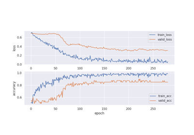
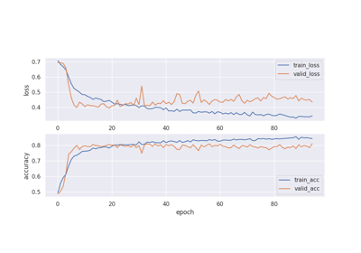

Examples#
Requirements for running Examples#
To run the examples, install the following packages:
pip install moabb braindecode
Getting Started!!#

Example 01: Within-subject classification with Riemannian classifier
Example 01: Within-subject classification with Riemannian classifier

Example 02: Within-subject classification with deep learning
Example 02: Within-subject classification with deep learning

Example 03: Cross-subject classification with Riemannian classifier
Example 03: Cross-subject classification with Riemannian classifier

Example 04: Cross-subject classification with deep learning
Example 04: Cross-subject classification with deep learning
Deep Learning#

Example 01: Testing Reproducibility of Deeplearning Experiments
Example 01: Testing Reproducibility of Deeplearning Experiments